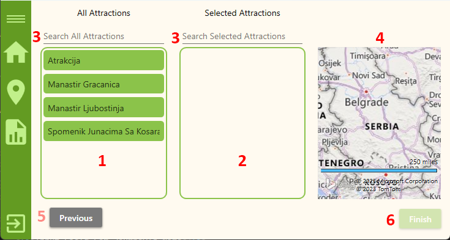

Add journey
Add journey
This is the third of three pages for adding/editing journeys that the agent sees after clicking the 'Add Journey' ('Edit Journey') button on their home page. The 'Add Attractions To Journey' page has the following layout:

- List of all attractions
- List of attractions that are in your journey
- Input fields for search
- Map
- Back to previous page
- Finish button
Lists Of Attractions
In the Create Journey window, you will find two lists: one for the list of all attractions and the other for the selected attractions. These lists provide a convenient way to manage and organize attractions for your journey. Here's how you can interact with them:
- Lists of All Attractions: The first list displays all available attractions that you can choose from. Each attraction is represented by an item in the list.
- Selected Attractions List: The second list shows the attractions that you have selected for your journey. Initially, this list may be empty, but as you add attractions, they will appear here.
- Drag and Drop: To select and move attractions between the two lists, simply click and hold on an attraction item in one listbox, then drag it and release it in the other list. This allows you to easily add or remove attractions from your journey.
- Multiple Selection: You can select multiple attractions by holding the Ctrl key on your keyboard and clicking on multiple items in either listbox. This is useful when you want to add or remove multiple attractions at once.
- Reordering Attractions: Within the selected attractions list, you can also reorder the items. Click on an attraction item and drag it to the desired position within the list. This feature enables you to prioritize attractions or adjust their order according to your preference.
- Map Location: When you select an attraction item in either listbox, its location will be displayed on the map. This allows you to visualize the attractions and their respective positions in relation to each other.
Input Fields For Search
In the Create Journey window, you will find two input fields that allow you to search attractions within each list. These input fields provide a convenient way to find specific attractions based on your criteria. Here's how you can utilize them:
- Search Attractions Input Field: The search input field is located above the list of all attractions. You can enter keywords, such as attraction names, to search for specific items in the list.
- Real-Time Filtering: Both input fields provide real-time filtering, meaning the attractions list will dynamically update as you type your search or filter terms. This allows you to quickly find the attractions you are looking for without manually refreshing the lists.
- Clearing Search or Filter: To clear the search and reset the attractions list, you can delete the text in the input field
Map
In the Create Journey window, you will find an interactive map that allows you to navigate and explore different locations. The map provides various functionalities to help you visualize the journey and its destinations. Here's how you can interact with the map:
- Drag to Move: To move your view across the map, click and hold on any part of the map, then drag it in the desired direction. This allows you to explore different areas and navigate to specific regions of interest.
- Scroll Wheel to Zoom: You can use the scroll wheel on your mouse (or trackpad) to zoom in or zoom out on the map. Scroll forward to zoom in, making the map display more detailed information. Scroll backward to zoom out, providing a broader view of the map.
- Double-Click to Zoom In: Double-clicking on the map allows you to quickly zoom in on a specific location. This feature is useful when you want to explore a particular area in more detail.
Previous Page
The Previous button in the stepper allows you to navigate back to the previous step or page within the journey creation process. This button provides flexibility for making changes or reviewing details from the previous page without losing your progress
Finish with creation proccess
The "Finish" button in the Create Journey window allows you to complete the journey creation process and navigate to the list of all journeys. This button finalizes the journey details and saves it in the system.